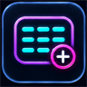
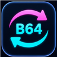
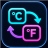

Useful tools.
Zero friction.
A focused collection of free tools for networking, development and everyday tasks. Open a tool and get straight to work — no account, no clutter.
Explore the collection
HostVitals
Compare browser, edge, DNS and official status signals to troubleshoot a website.
Open toolDownload Time Calculator
Estimate transfer time or calculate the speed required to meet a deadline.
Open toolSubnet & CIDR Calculator
Calculate IPv4 network details, address ranges, masks and host counts.
Open toolJSON Formatter
Format, minify and validate JSON directly in your browser.
Open toolUnix Timestamp Converter
Convert Unix timestamps to dates and times, and convert dates back.
Open toolCron Explainer
Understand a cron expression and preview its upcoming run times.
Open toolNetwork & IP Inspector
View your public IP, ISP and useful network details in one place.
Open tool
UUID Inspector
Inspect UUID, ULID, ObjectId and Snowflake identifiers and byte order.
Open toolNetwork Planner
Compare address blocks and plan IPv4/IPv6 subnets and allocations.
Open toolQR Code Generator
Create QR codes for text, links, Wi-Fi networks, contacts and messages.
Open toolPassword Generator
Generate secure random passwords or memorable passphrases locally.
Open tool
Base64 Encoder / Decoder
Encode and decode text or files privately in your browser.
Open toolRegex Tester
Test JavaScript regular expressions with match highlighting, capture groups and replacement previews.
Open tool
Unit Converter
Convert data sizes, length, mass, temperature and speed with clear SI and IEC units.
Open toolWant to understand the “why” behind a result?
Explore practical, example-led guides for networking, time, data and developer tasks.